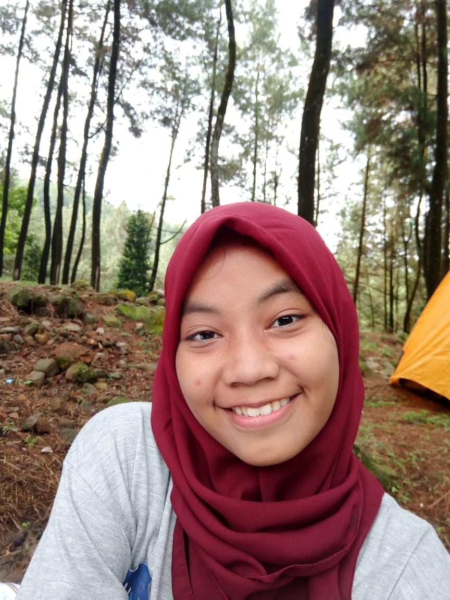

Selamat Datang
Curriculum Vitae

Data Pribadi
Nama : Putri Ramadhan
Tempat Tanggal lahir : 11 Desember 2001
Alamat : Jl. Galur RT02/06 No.38 Kel.Krukut Kec.Limo Kota Depok
Email : ramadhanputri95@gmail.com
No.Telp : 081519081552
Karakter
Bertanggung Jawab
Displin
Tepat Waktu
Prestasi
Membuat Program Perpustakaan
Membuat Program SPP
Klik Portofolio
Pendidikan
Pendidikan
Tahun Lulus
STT Terpadu Nurul Fikri
Masih dalam Perkuliahan Semester 1
SMK Informatika Utama
2020
MTs Al-Jamhuriyah
2017
SDN Krukut 03
2014